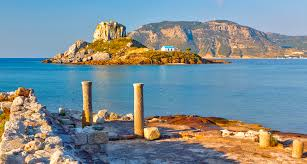

Κέφαλος
Η Κέφαλος είναι ένα χωριό στο νοτιοδυτικό άκρο του νησιού Κως, περίπου 42 χλμ. από την πόλη της Κω και 16 χλμ. από το Διεθνή Αερολιμένα «Ιπποκράτης».Σύμφωνα με την απογραφή του 2015 έχει 3.000 κατοίκους. την αρχαιότητα ονομαζόταν Αστυπάλαια και μέχρι το 366 π.Χ. ήταν η πρωτεύουσα του νησιού. Η ανακάλυψη του σπηλαίου της “Άσπρης Πέτρας” στην περιοχή αποδεικνύει πως τα πρώτα δείγματα ζωής στο νησί χρονολογούνται στη Νεολιθική Εποχή. Δύο εκδοχές εξηγούν πώς πήρε το όνομά της. Κατά την πρώτη, ονομάστηκε έτσι επειδή ήταν το κεφαλοχώρι κατά την αρχαιότητα, ενώ κατά τη δεύτερη και επικρατέστερη οφείλει το όνομά της στο σχήμα της περιοχής που μοιάζει με κεφάλι γυπαετού.